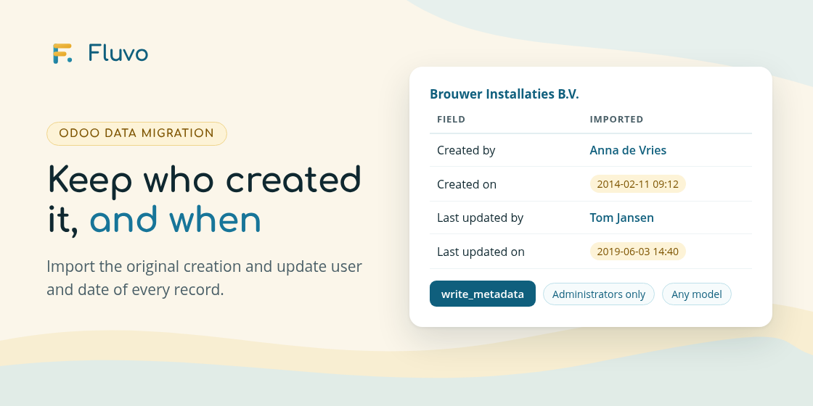
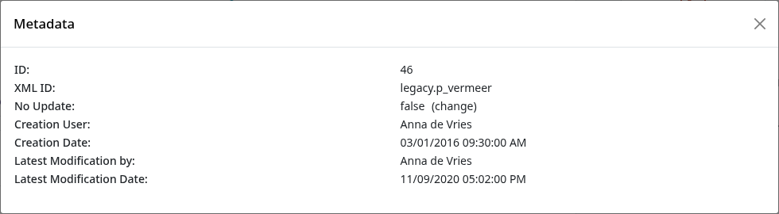

Import the original creation and last update user and date of records when migrating to Odoo, instead of the date of the import.

Customers keep the date they became a customer, and documents the user who created them in the old system.
Works for every record with the standard
create_uid, create_date,
write_uid and write_date fields.
Only for administrators, and only when asked for with a context key. Everything else imports exactly as before.
Import as an administrator with write_metadata in the
context, and add any of the four columns. For example with
load() through XML-RPC or JSON-RPC:
models.execute_kw(db, uid, password, "res.partner", "load",
[["id", "name", "create_uid/id", "create_date"],
[["legacy.p_vermeer", "Vermeer Logistics", "legacy.u_anna", "2016-03-01 08:30:00"]]],
{"context": {"write_metadata": True, "tz": "UTC", "mail_create_nolog": True}})
create_uid), XML ID
(create_uid/id) or database id
(create_uid/.id), like any many2one column.
YYYY-MM-DD HH:MM:SS. Add
"tz": "UTC" to import UTC dates unchanged.
"mail_create_nolog": True keeps Odoo from adding
a created message of today to the chatter.
A contact imported with its history, in the Metadata of the developer tools:
